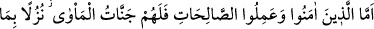
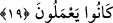
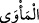
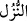
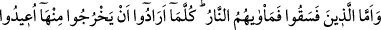
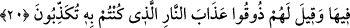

19. Îman edip de, sâlih ameller işleyenlere gelince, onlar için yaptıklarına karşılık
olarak varıp kalacakları cennet konakları vardır.
“Îman edip de, sâlih ameller işleyenlere gelince, onlar” hak ettikleri “için
yaptıklarına karşılık olarak” dünyâda işledikleri güzel ameller sebebiyle sevab ve ecir
olarak, misafirler için getirilen hazırda olan bir ikram hâlinde “varıp kalacakları
cennet konakları vardır.” Onlar için gerçek yerleşim yeri olan bahçeler ve cennetler
vardır.
el-İrşâd ’da der ki: Cennet, sığınak ve barınak anlamındaki “
” kelimesine izâfe
edilmiştir. Çünkü cennet mü’minlerin âhirette sığınıp barındıkları gerçek ikâmetgâhtır.
Dünyâ ise ancak konulup mutlaka göçülen bir konaktan ibârettir. Karar kılma yeri değil,
âhirete bir geçit yeri olduğu için ‘köprü’ diye isimlendirilmiştir.
İbn Abbâs (r.a.)’nın şöyle söylediği nakledilmiştir: “Me’vâ cenneti, tamamı altından
olan bir cennettir. Sekiz cennetten biridir ki bu cennetler şunlardır: Dâru’l-celâl,
Dâru’l-karâr, Dâru’s-selâm, Adn cenneti, Me’vâ cenneti, Huld/Ebediyyet cenneti,
Firdevs cenneti ve Naîm cenneti.”
“
” esasen gelen misafire yiyecek, içecek ve hediye olarak hazırlanan ikram
demektir. Daha sonra bütün ihsan ve ikramlar için kullanılmaya başlanmıştır.
et-Te’vîlâtü’n-Necmiyye’de denilmiştir ki: “Öyle ya,” Hak Teâlâ’yı talep etmek
sûretiyle “mü’min olan” Hak’tan başkasını taleb etmek sûretiyle “yoldan çıkmış kimse
gibi midir? Bunlar” Allâh’ın tâlibi olanlarla, mâsivânın tâlibi olanlar “elbette bir
olamazlar.” Hak Teâlâ’yı talep etmek sûretiyle “îmân edip de,” Allâh’a yönelip O’nun
dışındaki her şeyden yüz çevirmekle de “sâlih ameller işleyenlere gelince, onlar için
yaptıklarına karşılık olarak varıp kalacakları cennet konakları vardır.” yâni ebrârın
varıp kalacağı yer ve konak olan cennetler, seyr ilallah ehli olan mukarrabîn için bir ilk
ikramdır. Mukarrabînin varıp kalacağı yer ve konak ise, muktedir bir hükümdarın
katında, doğruluk meclisidir.”
20. Yoldan çıkanlar ise, onların varacakları yer ateştir. Oradan her çıkmak
istediklerinde geri çevrilirler ve kendilerine: “Yalandır deyip durduğunuz cehennem
azabını tadın!” denir.